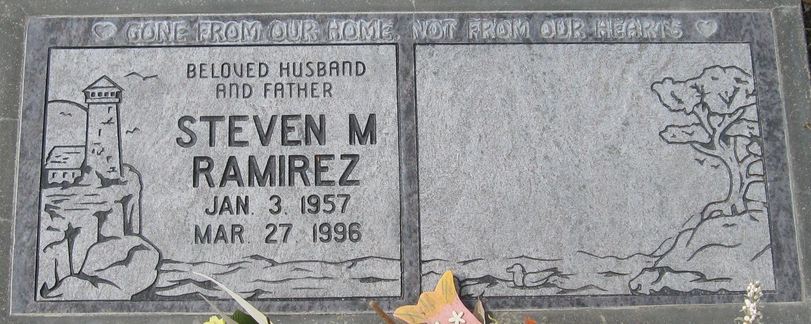

Steven Mike Ramirez 1957 - 1996
[ Home ] | [ Calendar ] | [ Surnames Index ] | [ Family History ]The 2nd of 3 children of Esequiel Ramirez and Mildred HarrisSteven Ramirez, the sixth cousin on the mother's side of Nigel Horne, was born in Corcoran, Kings, California, USA on Jan 3, 19571,2. He married Abby Hernandez in Kings, California, USA on Feb 16, 1980.
He died on Mar 27, 1996 in San Simeon, San Luis Obispo, California1,2 and was buried at Corcoran Memorial Park, Corcoran, California after Mar 27, 19963.
Parents
- Esequiel Hernandez was born on Mar 15, 1924
- Mildred Betty was born on Oct 3, 1922
Citations
- California, Death Record Index, 1940-1997 - Findmypast
- Social Security Death Index - Findmypast
- https://findagrave.com/memorial/50167325/steven-m.-ramirez
Media
Steven Ramirez - Headstone

Social Security Death Index - USBMD/SSDI/551116645
California, Death Record Index, 1940-1997 - US/MCV/786204/17661754132054377825
Family Tree

Generated by ged2site. Last updated on Nov 13, 2024